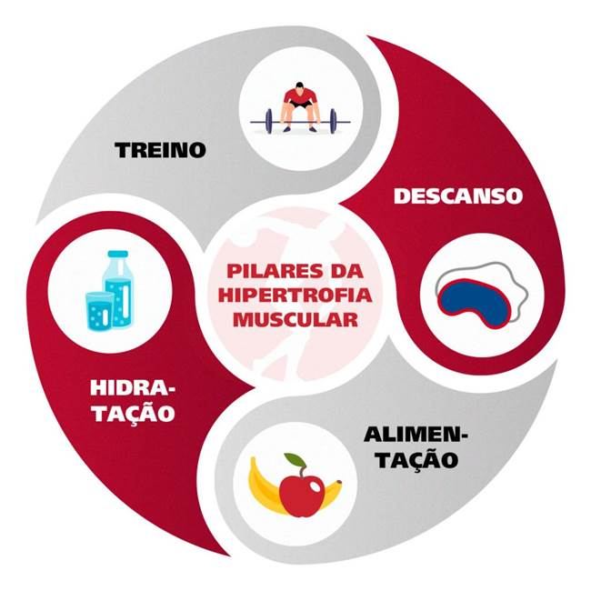

Pré-treino: qual a alimentação certa antes de se exercitar?
A alimentação tem um papel fundamental na sua saúde, no desempenho e nos resultados da atividade física que você pratica. É por este motivo que praticantes de todas as modalidades devem realizar a alimentação pré-treino correta.
Ao contrário do que muitos pensam, o melhor pré-treino não se resume em comer alimentos leves, sem carboidrato ou sem açúcar, mas sim priorizar aqueles que tenham os nutrientes que seu corpo precisa para a execução dos exercícios.
Então, veja neste conteúdo que preparamos como deve ser a alimentação antes de praticar atividades físicas e para que serve o pré-treino.
O que é pré-treino?
Pré-treino é toda alimentação que é realizada antes da prática de alguma atividade física, com o objetivo de impulsionar os resultados do seu treino, melhorar sua performance e evitar alguns problemas.
Com os ingredientes corretos, fornece energia durante a atividade e auxilia na recuperação do músculo após os exercícios, evitando cãibras e até mesmo lesões.
Assim sendo, independentemente de qual seja o seu objetivo, há diversas opções de pré-treino para acrescentar no seu planejamento alimentar, que vão ajudar a conquistar os resultados que tanto deseja.
Pré-treino: o que comer?
O objetivo do pré-treino é fornecer energia para os músculos, portanto, você deve ingerir alimentos que sejam ricos em fibras, carboidratos e proteínas.
Os carboidratos complexos são os melhores, porque promovem a sensação de saciedade por mais tempo.
Além disso, a refeição deve estar alinhada com seu objetivo. No pré-treino para emagrecer, por exemplo, assim como em todas as refeições do dia, a escolha deve conter menos calorias do que se o seu objetivo for participar de uma atividade de longa duração (como uma maratona por exemplo).
Mas o que comer no pré-treino?
Tanto no pré-treino para emagrecer quanto no pré-treino para ganhar massa magra, as refeições devem ser baseadas em 3 grupos alimentares: carboidratos, proteínas e frutas.
Veja alguns exemplos de alimentos:
· Tubérculos e raízes: batata, batata doce, mandioquinha, inhame, arroz, aveia, macarrão integral e tapioca;
· Frutas: banana, abacate, mamão, morango e abacaxi;
· Proteínas: frango, peixe, ovos, derivados de leite e leguminosas.
Dessa forma, com esses alimentos, é muito fácil montar um pré-treino caseiro, como é o caso de sucos e smoothies para consumir em menos de 1 hora antes do treino. O pré-treino natural é uma boa opção para você que quer se alimentar melhor e utilizar ingredientes naturais.
Mas, se você quiser, pode acrescentar na sua dieta o suplemento de pré-treino, que fornece os nutrientes mais importantes para que seu corpo tenha energia e força para a prática de atividade física.
O que não comer no pré-treino?
E também há os alimentos que você deve evitar de comer, porque podem atrapalhar seu desempenho.
A carne vermelha requer uma digestão mais lenta no organismo. Então, o ideal é consumi-la apenas quando faltar mais de 3 horas para seu treino.
Caso tenha menos tempo do que isso, prefira alimentos mais leves. Mas não se preocupe, mais para frente você vai ver alguns exemplos do que comer antes do treino, de acordo com o tempo.
O grupo das oleaginosas também deve ser evitado porque tem muita gordura, pouco carboidrato e muitas calorias.
Mas não significa que você deve cortar totalmente esses alimentos das suas refeições, deve apenas comer com moderação e no horário correto.
Como tomar pré-treino?
Não existe um horário específico para você se alimentar, contudo, a alimentação pré-treino deve ser realizada no mínimo meia hora antes dos exercícios. Mas vai depender da sua disponibilidade de tempo e dos alimentos pré-treino que você pretende comer.
Se o seu objetivo é perder peso, por exemplo, não pense que treinar em jejum vai te fazer bem. Seu corpo até vai perder massa gorda, contudo, também vai consumir massa magra.
E não se alimentar antes dos exercícios é uma estratégia que não só pode ocasionar falta de energia para o treino, como também pode causar tontura, queda de pressão e fraqueza muscular. Por isso, você sempre deve fazer um lanche de pré-treino adequado e nunca deve treinar em jejum.
Além disso, como dissemos anteriormente, o que comer de pré-treino vai depender do tempo que você tem e do tipo de atividade que pratica.
Atividades mais intensas exigem refeições mais complexas, com mais carboidrato, por exemplo, para dar mais energia e resistência aos músculos. Entretanto, se o pré-treino for realizado apenas meia hora antes, pode causar mal-estar, porque a digestão pode demorar mais.
Isso acontece porque o sistema digestivo precisa do auxílio do sangue para auxiliar no processo de digestão. Contudo, o organismo também precisa do sangue para levar o oxigênio e os nutrientes para os músculos do corpo. Então, o resultado é que o sangue se concentre em realizar apenas uma dessas tarefas.
Enfim, agora que você já entendeu a importância do pré-treino realizado no período certo, veja qual deve ser o tempo adequado para ingerir os alimentos e o que tomar de pré-treino com esses exemplos:
Pré-treino: lanches entre refeições
![Horários de Pré-treino para lanches Tempo Opções de alimentos Meia hora a 1 hora antes 1 porção de Iogurte natural com frutas; 1 banana com aveia; 1 maçã com pasta de amendoim; 1 batata doce com canela; 1 barrinha de proteína. 1 hora a 2 horas antes 2 ovos mexidos com uma fatia de pão ou torrada; 2 fatias de pão com queijo branco, alface e tomate; 1 panqueca de banana e manteiga de amendoim; 1 xícara de cereal com leite desnatado ou iogurte natural; 1 sanduíche com pasta de atum; 1 batata doce com frango.](img/post02.1.jpg)
Pré-treino: comida para refeições
![Horários de Pré-treino para refeições Tempo Refeição Opções de alimentos 1 hora a 2 horas antes Café da manhã 2 ovos mexidos com 2 torradas, queijo branco e suco de laranja; 1 panqueca de aveia, com pasta de amendoim, 1 porção de frutas e suco de morango; 1 tapioca com queijo branco, peito de peru e suco de abacaxi. 3 horas antes Almoço Filé de frango grelhado, com purê de batata e salada de folhas, tomate, pepino e cenoura; Salmão grelhado, com arroz e salada de rúcula e alface com queijo branco e torradas; Frango ao sugo com arroz e feijão, mandioquinha cozida e 2 ovos cozidos. 1 hora a 2 horas antes Jantar Wrap (rap 10 ou pão sírio) de frango desfiado, cenoura, tomate, alface e cebola picados; 3 torradas com geleia ou pasta de amendoim; 1 porção de cereal com frutas e iogurte.](img/post02.2.jpg)
Como ganhar 5 kg de massa muscular em 1 mês?
Como ganhar 5 kg de massa muscular em 1 mês? Você sabe? Será que é possível conseguir toda esta hipertrofia muscular em tão pouco tempo? E o que fazer para os músculos crescerem rapidamente de forma natural?
Para ganhar massa muscular rapidamente, você deve mudar várias coisas na sua rotina. Acompanhe este post para descobrir todas as respostas e conquistar a definição muscular dos sonhos!
Em primeiro lugar, como funciona a hipertrofia muscular?
Independente do seu biotipo físico, é possível conquistar a hipertrofia muscular com um plano de treino específico. Ele deve ser prescrito, orientado e supervisionado por profissionais para que, em primeiro lugar, você respeite os limites do seu corpo e não se machuque.
A hipertrofia ocorre através de processos conhecidos como catabolismo, anabolismo e supercompensação.
Quando os músculos recebem sobrecarga, eles perdem substâncias que compõem a sua estrutura. São várias substâncias, entre elas água, glicogênio e proteínas de vários tipos. Então durante o seu treino essa depleção de substâncias se chama catabolismo.
Então, após o treino, o próprio organismo começa repor todas essas substâncias. É a fase conhecida por anabolismo. Para que o corpo reponha tudo, é preciso ter uma boa alimentação, descanso, recuperação e sono.
Quando todas essas regras acima são respeitadas, o corpo repõe as substâncias que foram consumidas e fabrica um pouco a mais, e é esse acúmulo progressivo, chamado de supercompensação, que irá promover o ganho de massa muscular.
Portanto, fique atento! Se não houver descanso suficiente, ou se a sua alimentação não estiver adequada, por exemplo, o seu ganho de massa muscular poderá ser insatisfatório.
Percebeu a importância do acompanhamento profissional? Sem um bom planejamento para os seus treinos e para a sua alimentação, você corre o risco de treinar bastante e não obter os resultados almejados.
Por que algumas pessoas ganham mais massa muscular do que outras?
Os hormônios têm um papel fundamental no crescimento dos músculos, além da genética, o tipo de atividade que a pessoa pratica e a quantidade de fibras musculares.
Como a testosterona é o hormônio que estimula a hipertrofia muscular, os homens com níveis mais elevados tendem a ter um crescimento maior do que aqueles que têm os níveis mais baixos, assim como as mulheres. Inclusive, elas têm o nível de estrogênio mais alto, que é o hormônio responsável pelo depósito de gordura no corpo.
Além disso, os homens também apresentam uma quantidade maior de fibras do que as mulheres, o que estimula um crescimento mais rápido e maior dos músculos.
Então, como ganhar 5 kg de massa muscular em 1 mês?
Vamos deixar claro aqui que a maioria das pessoas consegue, com uma certa facilidade, ganhar cerca de um quilo de massa muscular por mês. Então, especialmente se você for iniciante, o tempo médio estimado para ganhar 5kg de massa muscular é de 5 meses.
As pessoas que já têm um bom nível de condicionamento físico e de força muscular podem obter resultados mais rápidos porque conseguem treinar com segurança usando sobrecargas bem maiores. Mas precisarão fazer uma dieta muito específica, utilizar suplementos alimentares e adotar um regime de 6 treinos semanais.
Não adianta apenas fazer musculação ou crossfit, você precisa de um treino adequado, com uma grande sobrecarga que estimule o maior crescimento dos músculos. Quando isso não é observado, muitas pessoas passam meses na academia e não conseguem ver a diferença.
Mas o que elas fazem de errado? Não seguem os pilares da hipertrofia muscular: treino (com a sobrecarga correta), descanso, hidratação e alimentação.

Pilares da hipertrofia muscular
Continue lendo para entender melhor sobre cada um desses pilares e conquistar os músculos que você tanto deseja!
Treino adequado
Se você quer alcançar a hipertrofia muscular, precisa se dedicar aos seus treinos de musculação, se exercitando 2 a 6 vezes na semana. Caso você treine menos do que isso, as adaptações voltam à estaca zero.
Portanto, se você mantiver uma regularidade para se exercitar, mais rápido verá os resultados. Mas não extrapole! Você vai entender melhor sobre a importância do descanso no próximo tópico.
Enfim, há outras dicas para quem quer saber como ganhar 5kg de massa muscular em 1 mês, para você aplicar durante a execução dos exercícios.
Confira quais são:
· O aumento progressivo da sobrecarga vai provocar uma sensação de queimação. Então, quando começar a senti-la, não pare! Continue até terminar a sua série de exercícios;
· Faça o movimento do exercício até o fim, para aplicar toda a sobrecarga proposta;
· O mesmo grupo muscular deve ser trabalhado pelo menos 2 vezes por semana para que ocorra a progressão da hipertrofia;
· Coloque uma carga maior do que seu limite atual, mas não exagere, para não acabar lesionando o músculo;
· Controle a respiração, você deve expirar enquanto estiver fazendo força e inspirar na volta do movimento.
Para continuar com a hipertrofia muscular após 1 mês (ou mais) você deve trocar de carga ou de treino, para que os músculos não se acomodem e continuem se adaptando aos novos desafios que os exercícios propõem.
Descanso
Não existe a menor possibilidade de imaginar como ganhar 5 kg de massa muscular em 1 mês sem o descanso suficiente.
Não é apenas de exercícios físicos e alimentação que seu corpo precisa. A hipertrofia ocorre durante o repouso, por isso, você precisa descansar, sem causar mais estresse aos músculos que já começaram o processo.
Portanto, você deve intercalar no seu programa de musculação os músculos que irá exercitar. Se na segunda-feira tiver treino de abdômen, na terça-feira você deve praticar exercícios para as pernas, por exemplo.
Hidratação
A água está presente em todos os processos do nosso corpo, inclusive na formação de proteínas que, por sua vez, são responsáveis pela formação e recuperação das fibras musculares.
Portanto, você deve beber a quantidade ideal de água por dia, para manter o corpo hidratado e para que o organismo funcione corretamente. O correto é que você beba 35 ml de água para cada quilo do seu peso.
Além disso, você deve evitar alguns líquidos, como sucos com açúcar, refrigerantes, bebidas alcoólicas e até isotônicos.
Alimentação
Sua alimentação deve ser rica em proteína para o crescimento dos músculos, como você já viu anteriormente. As proteínas devem estar presentes em todas as refeições para manter os níveis de aminoácidos altos no sangue, porque eles estimulam a recuperação muscular.
Alguns alimentos ricos em proteínas boas para a hipertrofia são: peixe, frango, arroz com feijão, lentilha e castanha de caju.
Mas não é só isso, você deve consumir gorduras boas e carboidratos, para estimular a hipertrofia, sem causar o ganho de massa gorda. Também deve tentar comer 3 frutas por dia, para que seu organismo tenha os nutrientes necessários para seu funcionamento.
E você não pode entrar em uma dieta com poucas calorias, pelo contrário, deve consumir mais. Afinal, seu objetivo não é o emagrecimento e sim o crescimento, por isso deve comer de 3 em 3 horas.
Antes do treino, você pode tomar suco natural e depois pode algum alimento rico em proteína para intensificar o ganho de massa muscular.
Série de musculação: os mitos das repetições
Você já ouviu falar que a série de musculação na academia é repetida por números pares ou ímpares de acordo com a necessidade de ganho de massa ou hipertrofia? Mito ou verdade?
Será que se o treino for realizado com números diferentes o
praticante vai obter o resultado desejado, ou seja, aumentar
músculos ou secar?
Veja neste post, afinal o que é mito e o que é verdade neste
pensamento dentro do universo fitness.
Série de musculação: treino de hipertrofia ou ganho precisa ter repetições pares?
Normalmente na pirâmide de treinamentos as repetições são 12, 10 e 8. Para força, são as séries de musculação são 4 x 4; já para treino hipertrofia são 4 x 10.
Ou seja, parece que os números pares até 12 repetições são para
força e hipertrofia, o que já foi determinado na sua avaliação
física.
Mas então surge a questão: e quando fazemos 15 repetições? A
mentalidade comum é que esse número de repetições é indicado para
resistência, para quem está começando a treinar.
Mas e quando são 20 repetições das séries de musculação?
Muitas respostas são de que esse número é para queimar gordura ou
para resistência muscular, mais conhecida como RML.
Você já pode ter vivido ou visto essa cena: a pessoa pede ajuda para não parar a série de supino na sétima repetição ou alguém vai ajudar um amigo para completar a décima repetição porque parar na nona pode representar algo muito ruim para o treino.
Então será que é lenda usar as repetições pares na série para
academia? Será que fazer 11 repetições, ao invés de 10 ou 12, vai
colocar todo o trabalho a perder para quem quer aumentar a massa
muscular? Treze então, nem pensar. Será que dá azar?
Série para academia: um estudo da lenda
Esse
mito das repetições pares começou a me provocar. Ou seja, senti
como um desafio, e comecei a fazer qualquer tipo de série de
musculação com números ímpares.
Também busquei fazer os treinos com repetições com alguns números
pares esquecidos, como 14, 16 e 18.
Na verdade, não sei por que esse preconceito. Sempre pulam de 12
repetições para 15 e depois para 20.
Então pude observar os resultados dos treinos com os números
excluídos: misteriosamente tudo continuou fluindo de forma suave e
harmônica.
O que quero dizer com isso é que os resultados, seja para força ou
o melhor treino para hipertrofia, continuaram dando muito certo
com os números ímpares e os pares esquecidos.
Treino: hipertrofia ou ganho precisa de repetições para dar intensidade
Então se é mito usar apenas os números 12, 10 ou 8, pular para o 15 e depois para o 20. Para que servem essas repetições?
Explico: as repetições servem para nortear a intensidade de
treino. Ou seja, quanto menor o número de repetições, maior o peso
utilizado no exercício.
Outro fator que age em conjunto é o tipo de substrato energético
utilizado ou melhor dizendo, qual combustível que o corpo usa para
aquele determinado número de repetições.
Por exemplo para os treinos de potência e força, o combustível é o ATP-PC 9 (adenosina trifosfato e creatina fosfato).
Esse substrato é instantâneo, fornece muita energia em milésimos
de segundo, porém, dura pouco. Seus estoques duram em média 10
segundos. Em 10 segundos, conseguimos realizar de uma até 2 ou 3
repetições (3 a 4 segundos por repetição) da série de musculação.
Para treinos de força e potência, são indicadas 1 a 3 repetições
com intervalos de descanso maior que 2 minutos. Esse é o tempo que
o corpo leva para restabelecer os estoques de ATP-PC.
Dica do blog: hipertrofia precisa de mais repetições
Já para hipertrofia, o principal combustível é o glicogênio muscular, e sua máxima utilização se dá em torno de 15 segundos até por volta de um minuto.
Por isso, o melhor treino
para hipertrofia tem séries
que variam de 6 até 12 repetições.
Seis repetições duram aproximados 18 a 24 segundos, e 12
repetições ficam em torno de 36 até 48 segundos, em média.
As repetições na musculação só existem para nos ajudar a ter um
controle melhor dos pesos, ou seja, da intensidade. Isso vale
também para o treinamento funcional.
Fazer 5, 7 ou 13 repetições, não vai fazer com que você não atinja
o resultado esperado. Muito pelo contrário, vai proporcionar uma
melhor adaptação do seu organismo, dando sempre pequenos passos
dos quais estamos preparados para dar.
Se na sua ficha de treino do GPA sair 3×7, pode acreditar, não
precisa ter medo, pode fazer. Tenha certeza que alcançará um bom
resultado!
Fonte
https://blog.ciaathletica.com.br/alimentacao-saudavel/pre-treino/
https://blog.ciaathletica.com.br/definicao/como-ganhar-5-kg-de-massa-muscular-em-1-mes/
https://blog.ciaathletica.com.br/definicao/serie-de-musculacao/